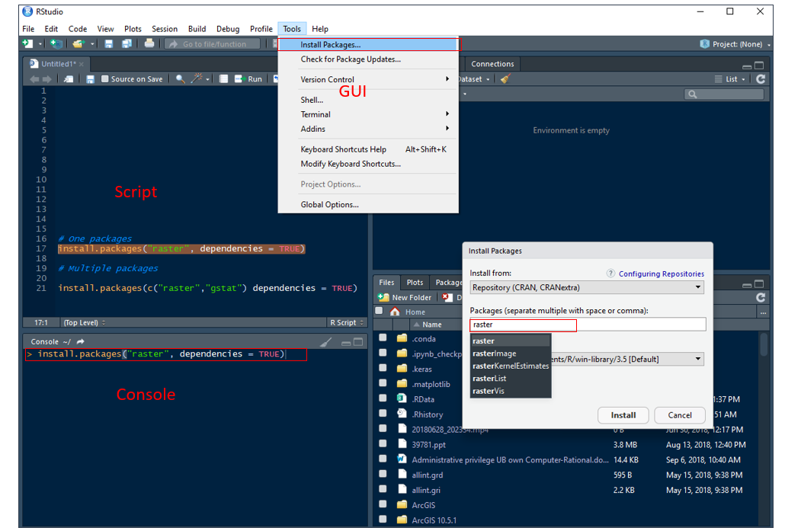

Getting Started with R
Getting Started with R
What is R?
R is an open-source environment for statistical computing and visualization. It is based on the S language developed at Bell Laboratories in the 1980’s, and is the product of an active movement among statisticians for a powerful, programmable, portable, and open computing environment, applicable to the most complex and sophisticated problems, as well as “routine” analysis, without any restrictions on access or use.
Download and Installation R
The R can download from the R project of a repository CRAN or you can install Microsoft R Open.
** Install R in Windows**
Installation instruction of R in Windows and MAC could be found here
Detail Installation steps of Microsoft R Open in different operating systems can be found here.
Install R-base in Ubuntu
Update repositories list: deb https://cloud.r-project.org/bin/Linux/Ubuntu xenial-cran35/
Use following commands in terminal:
- $ sudo apt-get update
- $ sudo apt-key adv –keyserver keyserver.ubuntu.com –recv-keys E298A3A825C0D65DFD57CBB651716619E084DAB9
- $ sudo apt-get install r-base
Download and Installation R-Studio
First, you have to download RStudio according to your operating system from here. For windows user, and just run the installation file and it normally detects your latest installed R version automatically. If you want to do some extra configuration, you need follow some steps which can be found here
For Linux user, use following commands in terminal:
- $ sudo apt-get install gdebi-core
- $ wget https://download1.rstudio.org/rstudio-xenial-1.1.383-amd64.deb
- $ sudo gdebi rstudio-xenial-1.1.383-amd64
- $ rm rstudio-xenial-1.1.383-amd64
After installation, double click on desktop icon or open program from START to run R. R will be open as a Console window (Fig. 1a). You can work in console and use R with the command line. However, the command line can be quite daunting to a beginner, It it is better to work in R Editor (Fig. 1b). First you have to create a New script from File menu. Any code you run in R-script, output will be displayed in console window. We can save all of your R codes as a R script file and output in console as a R-Data file.

As I mentioned before, R-Studio includes console, syntax-highlighting editor that supports direct code execution, as well as tools for plotting, history, debugging and work space management. Moreover, you can share your codes with output as HTLM, MS-word and PDF with others.
R Packages
Packages are collections of R functions, data, and compiled code in a well-defined format. The directory where packages are stored is called the library. We can install any R ‘package’ or multiple package directly from the console, using r-script and GUI (Tools > Install Packages) through internet.
Use install.packages() function in your console or in a script:
# One package
# install.packages("raster", dependencies = TRUE)
# Multiple packages
# install.packages(c("raster","gstat") dependencies = TRUE)